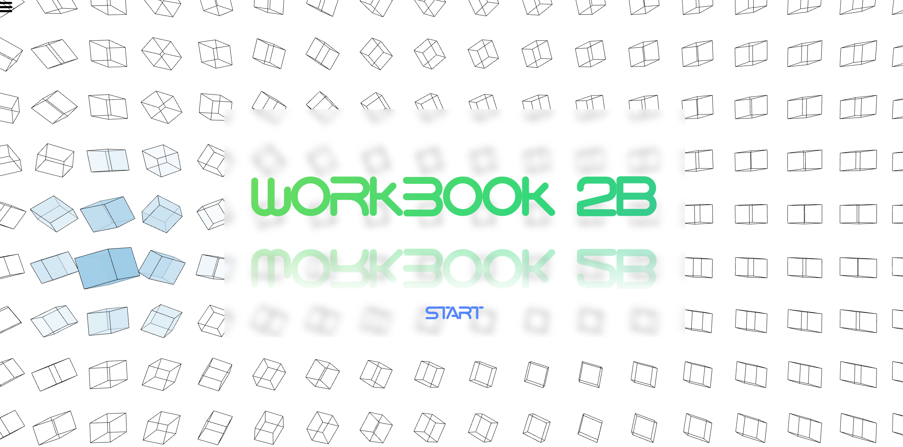

Our workbook2A theme revolves around the concept of a magical box containing anything, so in the 2B section, we retained this theme and added some p5.js code to enhance interactivity with the box element and engage the audience more effectively.
Another optimization based on 2A is the navigation bar section. Initially, we had a horizontal navigation bar at the top, which seemed rigid and prone to errors in responsive design. The new navigation bar can be hidden when not needed by the audience and can be closed by clicking anywhere on the page. This also makes responsive design much easier.